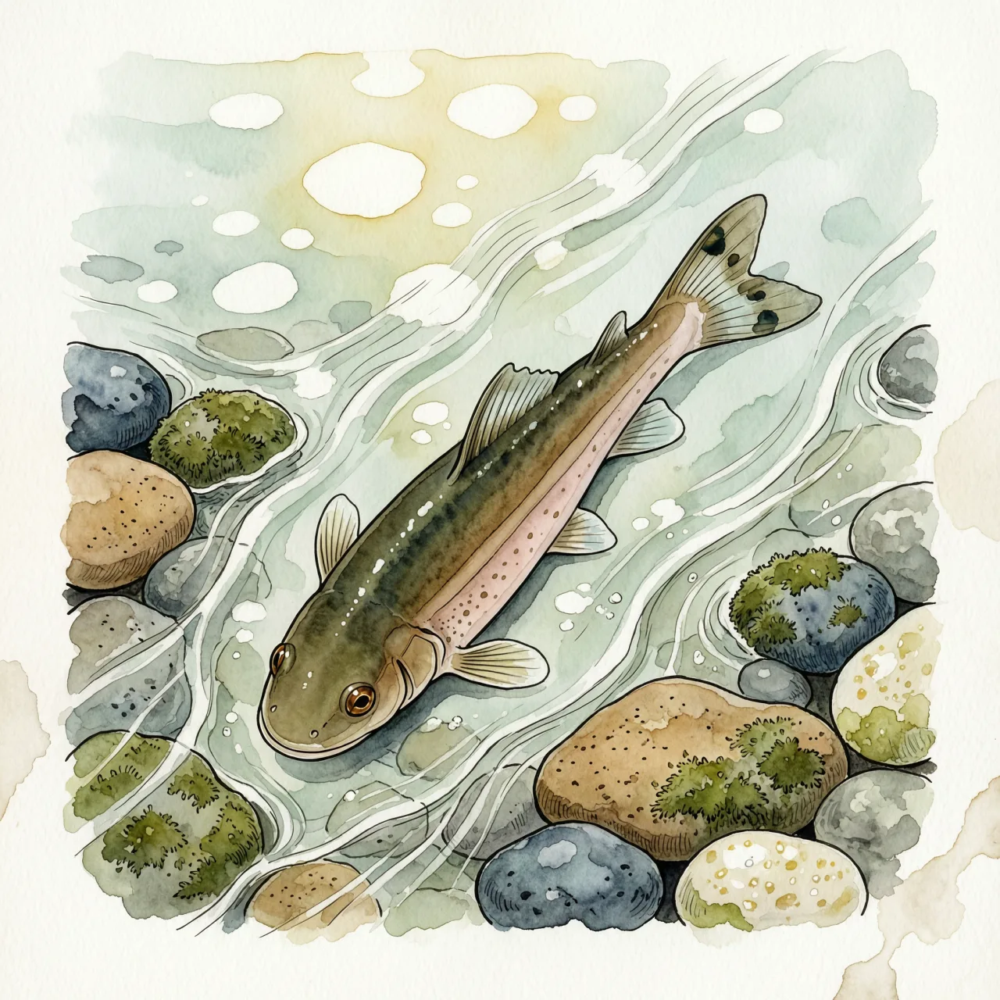
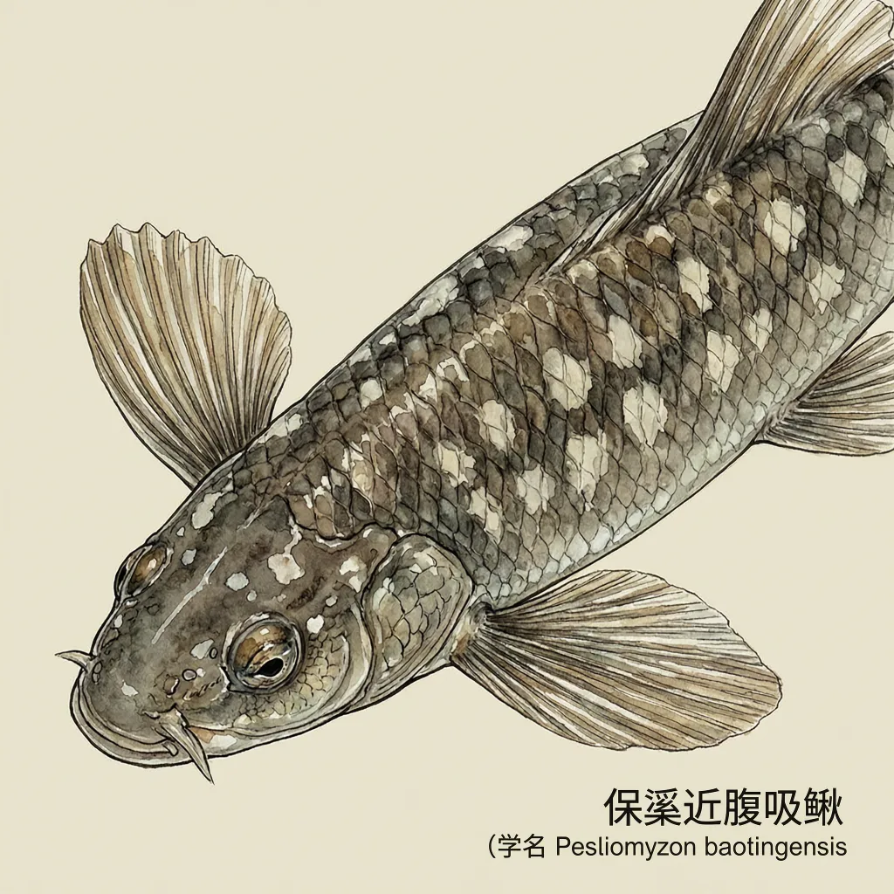

保亭近腹吸鳅是平鳍鳅科近腹吸鳅属的鱼，只产于中国海南岛，已知分布于陵水水系的册溪等小支流，模式产地在保亭。它生活在一直在流动的山溪石面上，身形扁平、胸腹鳍宽展，贴石而立不被急流冲走。这类鱼对水质变化极为敏感，IUCN 评估为易危。
海南岛的山溪里，水不深，但一直在流。保亭近腹吸鳅已知的足迹窄到只落在陵水水系的册溪等小支流上，模式产地在保亭，种加词 baotingensis 就是照这个地名起的，它是中国海南的特有种，整个物种系在几条山的溪水上。这样的溪流浅、流速快、溶氧高，河床以砾石为主而不是淤泥。对一条贴着石头过的鱼来说，石面既是立足点，也是它躲开急流的全部空间。
在急流里待着不走，是第一道生存题。平鳍鳅科的溪居种类普遍身形扁平，胸鳍和腹鳍宽展如扇，撑在砾石面上把身体压紧；近腹吸鳅属的中文名正落在腹鳍的位置上。保亭近腹吸鳅属于这套身形：不靠游、而靠贴，水流从体侧被分开，它停在原处。这套结构也把它的活动范围锁死在流水的石头表面——溪一缓、底一淤，贴石的本事就反成拖累。
读者大概率不知道的是它被记录的时间有多晚：直到 1980 年，Zheng 与 Chen 才为保亭近腹吸鳅正式命名，此前它在分类记录里是空白。发现晚加上分布窄，连“它原本住在多少条溪里”都缺乏基线，IUCN 红色名录把它列为易危。对这样的物种，威胁不必是捕猎：上游一次施工泛起的淤泥，就足以改写它的整条溪。
